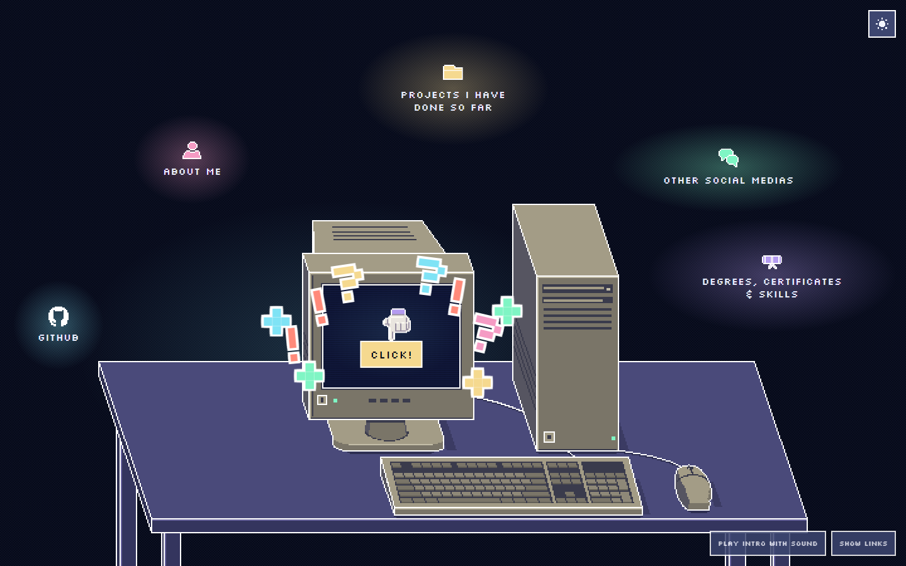
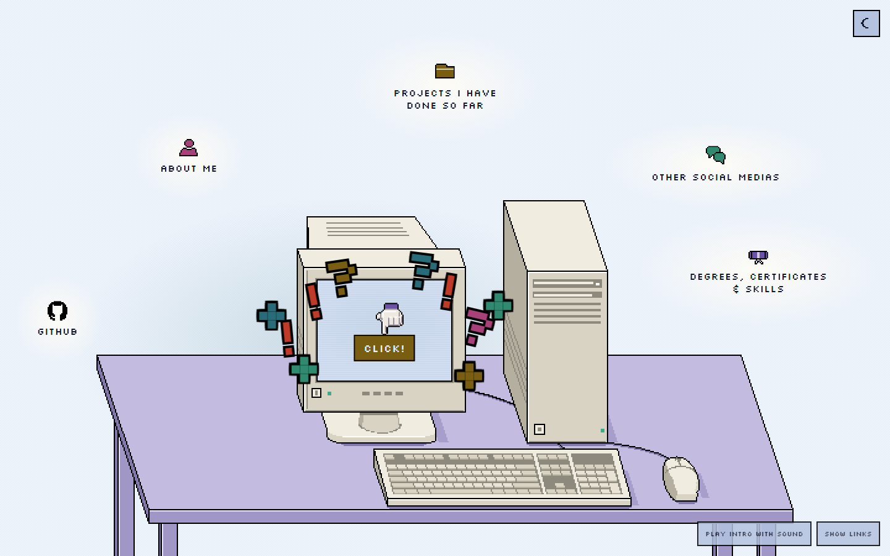
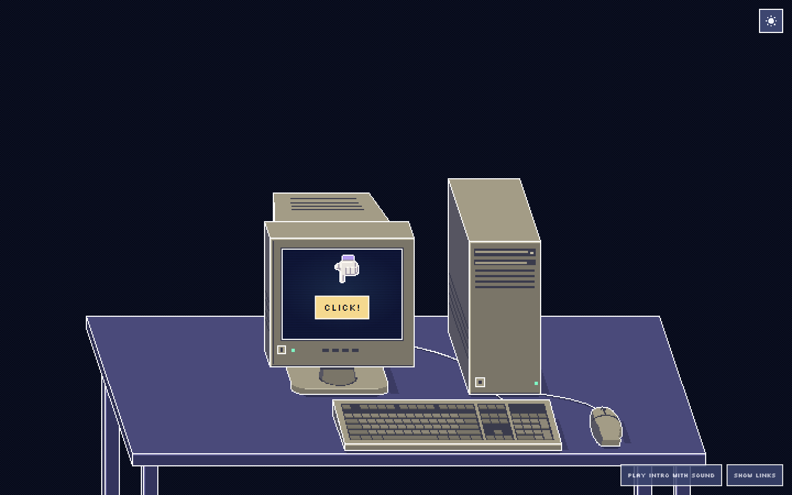

Captures from the working site. The cycle is 3600ms: contact at 540ms, the key down
for 100ms, the finger up by 790ms, the five links fading to nothing over the 1900ms
after the finger lifts, then about a second of darkness plus the next approach before
the next click. Frames are parked at the named beats; the three "live" shots were taken
500ms after full light in three consecutive live cycles.
Before · the fifth pass, for comparison
Before, dark · the cyan halo on the wall behind the monitor

Before, light

The sequence · desktop 1440×900, dark theme
Dark rest · no halo, no trace of the five links

Contact + 40ms · the key is down, the links are lighting